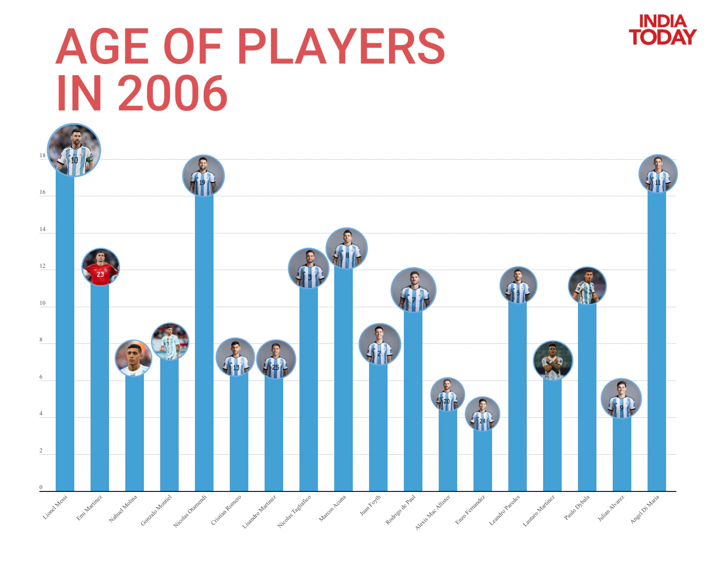
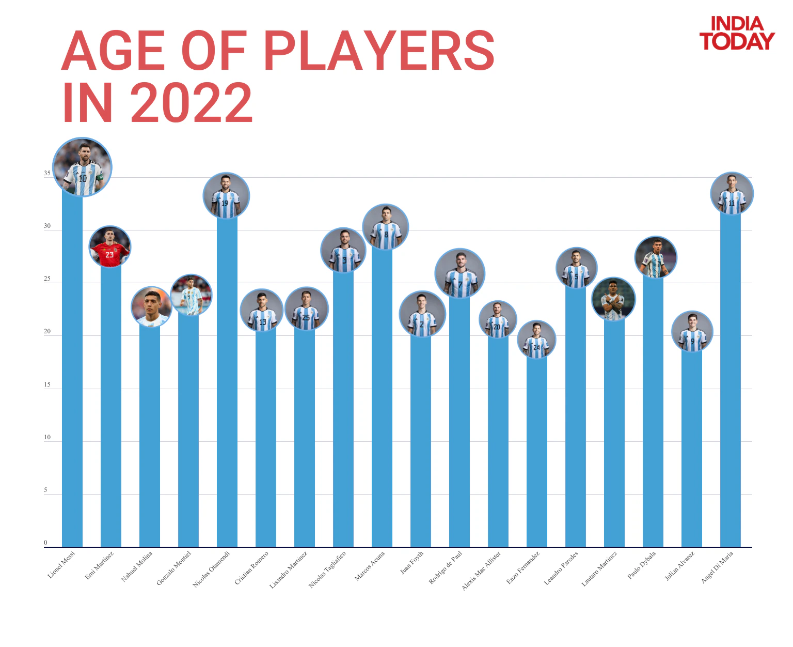

Lionel Messi THE GREATEST OF ALL TIME
Published On :
Lionel Messi, who is in his fifth World Cup, is one of the greatest players of all time. However, the World Cup glory, which is often brought in the GOAT debate, still eludes him, much like Cristiano Ronaldo, who exited the FIFA World Cup, earlier in the quarter-final against Morocco. Lionel Messi's shot at glory comes at the most turbulent stage in his career, 6 years after he briefly retired from international football, devastated after Copa America final loss vs Chile. Messi missed a penalty kick in the final, broke down on the pitch, and called time on his career in frustration of not being able to win an international trophy. Many felt Messi's career was over after his FC Barcelona exit in mid-2021, and the subsequent form in club football with Paris Saint-Germain. While his club career dwindled, Lionel Messi's trophy-less international career took an upward turn.
The Children
When Lionel Messi announced himself on the international stage with a goal and an assist against Serbia and Montenegro, many in the current Argentina line-up were trying hard to wake them themselves up for school. The youngest of them all was one of Argentina's breakthrough players in the tournament - Enzo Fernandez, who was just 5 years old at the time. With him around the same age bracket were Alexis Mac Allister (6), Julian Alvarez (6), Nahuel Molina (8), Cristian Romero (8), Lisandro Martinez (8), Juan Foyth (8) and Lautaro Martinez who was also 8 years old.
The Pre-Teens
The Argentine midfield has been one of the most well-formed and discipline unit in the tournament, covering up spaces behind Messi and not letting attacks reach dangerous goal-scoring positions. Much of that midfield was in their pre-teens in 2006, when Messi step foot in the field, first time as an Argentina player. Rodrigo de Paul, Leandro Paredes and Paulo Dybala were 12 years old while right back Gonzalo Montiel was 9.
The Teenagers
Lionel Messi was himself a teenager when he played his first World Cup, and he has several players in the Argentina line-up who are fairly close to him in age, in the wrong side of 30s. However, none of these players made their debut in the 2006 World Cup alongside Messi and were not playing for a major club in 2006. Argentina goalkeeper Emi Martinez, who carried the side into the semi-final was just 13 years old in 2006, alongside Nicolas Tagliafico. While left-back Marcos Acuna was 14 years old. The closest to an international debut were Angel Di Maria (18) and Nicolas Otamendi (18) who made their international debuts in 2008 and 2009 respectively
Much of the Argentina side, which will walk out to play in the final, has grown up watching Lionel Messi play in their childhood. The feeling is best summed up in the fact that many Argentine players have come forward and said that the greatest goal-scorer in the country's history deserves to win the World Cup. For that matter, Rivaldo, former captain of Argentina's arch-nemesis Brazil has said Messi deserves to win the trophy. "No words for you Messi you deserved to be World Champion before, but God knows all things and will crown you this Sunday, you deserve this title,” Rivaldo wrote on his social media. In many ways, this World Cup is similar to the 1986. There the country rallied behind Maradona, and now they rally behind Lionel Messi, for a last dance, set to be played at the Lusail Stadium on December 18 at Doha.